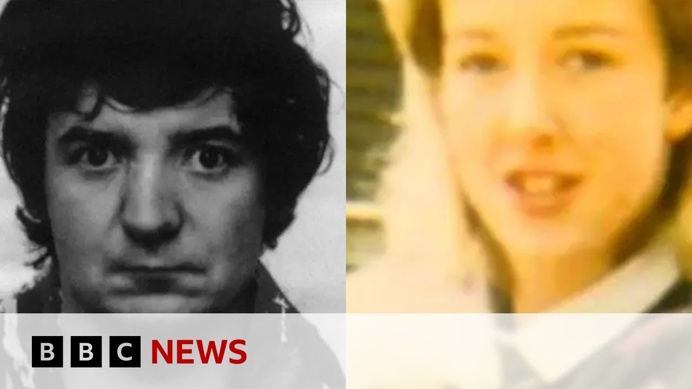

【男子1986年谋杀罪判决在38年后被推翻 | BBC新闻】
Summary: A man imprisoned for 37 years over a notorious 1980s murder has been freed after new DNA evidence proved his innocence, marking the longest miscarriage of justice in UK history.
摘要： 一名因1980年代一桩臭名昭著的谋杀案被监禁37年的男子在新DNA证据证明其清白后获释，这是英国历史上持续时间最长的误判案件。

⏱️ Estimated Reading Time: 11 min
We start with some breaking news from here in London on the longest running miscarriage of justice affecting a living prisoner in UK history.
我们从伦敦为您带来一则突发新闻，这是英国历史上影响在世囚犯的最长误判案件。
A man who spent more than 37 years in jail for one of the most notorious murders of the 1980s has been freed by the Court of Appeal after new DNA evidence showed he wasn't the killer.
一名因1980年代最臭名昭著的谋杀案之一被关押37年多的男子，在新DNA证据显示他不是凶手后，被上诉法院释放。
Peter Sullivan was jailed in 1987 for the sex attack and murder of 21-year-old bride to be Diane Synindle who was killed as she walked home in Burken Head in 1986.
彼得·沙利文于1987年因性侵和谋杀21岁的准新娘戴安·辛迪尔被判入狱，后者于1986年在伯肯黑德步行回家时遇害。
So let's take you live to the Court of Appeal in central London.
现在让我们连线位于伦敦市中心的上诉法院。
We can join our correspondent there, Tom Simons, who's been following the case.
我们可以与一直跟踪此案的记者汤姆·西蒙斯连线。
Tom, tell us about that historic and quite remarkable movement in court.
汤姆，请告诉我们法庭上这一历史性且相当引人注目的进展。
Well, Peter Sullivan wasn't in court.
彼得·沙利文并未出庭。
He was in prison where he's been for 38 years actually if you include the time he spent before uh being charged and convicted of this terrible crime.
他仍在监狱中，实际上已被关押38年，如果算上他被指控和定罪前的时间的话。
Uh he was at Wakefield Prison listening down a video link.
他在韦克菲尔德监狱通过视频连线聆听了判决。
Uh there were a couple of hours of submissions to the very senior judges here about his case primarily about the DNA evidence which has changed everything which has proven that uh there was DNA evidence found on Diane Synindle's body and it is proven not to be his.
高级法官们花了几个小时听取关于此案的陈述，主要是关于改变一切的DNA证据，该证据证明在戴安·辛迪尔尸体上发现的DNA并非他的。
We don't know whose it is, but it's not his.
我们不知道是谁的，但不是他的。
And when he heard that the judges had decided that that meant that his conviction could be quashed, he was in tears.
当他听到法官们决定这意味着他的定罪可以被推翻时，他泪流满面。
He put his head on the the table in front of him, and his supporters in the public gallery were also in tears.
他把头靠在面前的桌子上，旁听席上的支持者也泪流满面。
And we've heard some of them reacting outside court here the last few minutes.
过去几分钟里，我们听到一些人在法庭外作出反应。
But to give you the background to this case, which has gone on for so long, uh this is our legal affairs correspondent, Dominic Cashani.
但为了提供这起持续如此之久的案件的背景，请听我们法律事务记者多米尼克·卡沙尼的报道。
Almost 38 years in jail, now told he is an innocent man.
在监狱中度过了近38年后，他现在被告知自己是无辜的。
This is Peter Sullivan, jailed in 1987 for one of the most shocking crimes of that decade.
这就是彼得·沙利文，1987年因那个年代最令人震惊的罪行之一被判入狱。
He was convicted of murdering 21-year-old Diane Synindel in Burken Head on the Whirl.
他被判在伯肯黑德的惠尔谋杀21岁的戴安·辛迪尔。
Miss Synindle was a muchloved florist and bartender, saving up for her coming marriage.
辛迪尔小姐是一位深受喜爱的花店店员和调酒师，正在为即将到来的婚姻攒钱。
Late at night in August 1986, her van ran out of petrol on the way home.
1986年8月的一个深夜，她的货车在回家路上没油了。
And as she walked in the dark, her killer struck here on one of the town's main roads.
当她在黑暗中步行时，凶手在镇上的主要道路之一袭击了她。
Diane was killed sometime around midnight on Friday, August the 1st on Burough Road in Burken Head.
戴安于8月1日星期五午夜时分在伯肯黑德的伯勒路遇害。
So desperate were the police for leads they went nationwide, telling the BBC's Crime Watch they had no idea who the killer was.
警方如此迫切地寻找线索，以至于在全国范围内寻求帮助，告诉BBC《犯罪观察》节目他们不知道凶手是谁。
We haven't got any sightings whatsoever of Diane walking back along Burough Road towards the town center.
我们没有任何目击者看到戴安沿着伯勒路走回镇中心。
Nobody saw who snatched Diane Synindle off this busy road and go on to murder her in this alleyway.
没有人看到是谁从这条繁忙的道路上劫走戴安·辛迪尔，然后在小巷中谋杀她。
And it took the police weeks to conclude that Peter Sullivan was their prime suspect.
警方花了数周时间才认定彼得·沙利文是主要嫌疑人。
37 years on, that conviction was thrown into doubt by evidence that had been gathered from the crime scene.
37年后，从犯罪现场收集的证据使这一判决受到质疑。
New DNA testing pointed to another man.
新的DNA检测指向了另一名男子。
Peter Sullivan's trial heard he'd been spotted at this beauty spot where some of the victim's belongings were set a light.
彼得·沙利文的审判中听说，有人在这个风景点看到他，那里的一些受害者物品被点燃。
Sullivan admitted the killing to the police, but then retracted his confession.
沙利文向警方承认了杀人行为，但随后撤回了供词。
Four decades on, the DNA profile that's overturned Peter Sullivan's conviction was obtained by the Criminal Cases Review Commission.
四十年后，推翻彼得·沙利文定罪的DNA图谱由刑事案件审查委员会获得。
In 2021, he asked it for help, and it forensically examined evidence taken from the victim, something it had refused to do 16 years ago.
2021年，他请求帮助，委员会对从受害者身上提取的证据进行了法医检查，这是16年前拒绝做的事情。
It acted this time after being warned it had missed a similar DNA opportunity in the case of Andy Malinson, later exonerated of rape.
这次行动是在被警告错过了安迪·马林森案件中类似的DNA机会后采取的，后者后来被证明强奸罪名不成立。
This result means Diane Synindle's real killer got away with it.
这一结果意味着戴安·辛迪尔的真正凶手逍遥法外。
The unknown attacker was free while Peter Sullivan endured one of the worst miscarriages of justice in British legal history.
未知的袭击者自由自在，而彼得·沙利文却承受了英国法律史上最严重的误判之一。
Dominic Hashani, BBC News.
BBC新闻，多米尼克·哈希尼报道。
Now, we have been hearing some responses from those involved with Peter Sullivan's case over the years.
现在，我们听到了一些多年来参与彼得·沙利文案的人士的回应。
In particular, his lawyer, Sarah Matt, who gave us a statement earlier, read his words, Mr. Sullivan's words.
特别是他的律师莎拉·马特早些时候向我们发表声明，转述了沙利文先生的话。
He said, "I am not angry. I am not bitter."
他说："我不愤怒。我不怨恨。"
He said he was just anxious to return to his loved ones and as he put it, repair what he could from the driftwood, which is my life.
他说他只是渴望回到亲人身边，用他的话说，从"我生命的浮木"中修复他能修复的一切。
Those are his words, Peter Sullivan's, after hearing of his conviction being quashed.
这些是彼得·沙利文在听到他的定罪被推翻后说的话。
And also we heard from Kim Smith, his sister, who perhaps unexpectedly came to the microphone and gave us this.
我们还听到了他的妹妹金·史密斯的发言，她或许出人意料地来到麦克风前，告诉我们这些。
We've lost Peter for 39 years.
我们已经失去彼得39年了。
And at the end of the day, it's not just us.
归根结底，不仅仅是我们。
We haven't won.
我们没有赢。
Peter hasn't won and neither is the Synindor family.
彼得没有赢，辛迪尔家也没有赢。
They've lost their daughter.
他们失去了女儿。
They're not going to get her back.
他们不会让她回来了。
We've got Pisa back and now we've got to try and build a life around him again.
我们找回了彼得，现在我们必须尝试围绕他重新建立生活。
So at the end of the day, we feel sorry for the symbols and it's such a shame that all this has had to happen in the first place.
所以归根结底，我们为辛迪尔家感到难过，这一切本不该发生，真是太遗憾了。
So but that's it now.
但现在就是这样了。
Feel when you had just ecstatic.
感觉就像你刚刚欣喜若狂。
It was it shouldn't have happened in the first place.
这本来就不该发生。
And now it's it's it's out in the open.
现在一切都公开了。
Everybody knows about it now.
现在大家都知道这件事了。
And let's hope people will start respecting all our wishes now and understand that he Peter was called so many different names and that all needs to be squashed now because Peter was never anything of what he's being called in the first place.
让我们希望人们现在开始尊重我们所有的愿望，并理解彼得被叫过那么多不同的名字，现在所有这些都需要被消除，因为彼得从来就不是他被称呼的那些东西。
So thank you very much.
非常感谢。
Kim Smith the sister of Peter Sullivan giving her response just now.
彼得·沙利文的妹妹金·史密斯刚刚作出回应。
Now, it's the nature of these miscarriage of justice cases that one question is answered, but that opens lots of other questions.
现在，这些误判案件的性质是，一个问题得到解答，但会引发许多其他问题。
Firstly, who called who killed Diane Synindel on that night in 1986?
首先，1986年那个晚上是谁杀害了戴安·辛迪尔？
A really bad day for her parents in many ways.
对她的父母来说，在很多方面都是非常糟糕的一天。
They now don't know the answer to that question.
他们现在不知道这个问题的答案。
Uh the second question is what are we are we doing the right thing for people who feel that they have miscarriages of justice in their cases.
第二个问题是，我们是否为那些认为自己案件存在误判的人做了正确的事情。
Uh this case will I think lead to questions further questions following that of Andrew Malinson in 2023 who was uh who saw his rape conviction quashed about whether the bar is simply too high in the system that we have at the moment for people to convince a court and to convince the authorities that their case should get another hearing at the Royal Courts of Justice at the appeal court here.
我认为这个案件将引发更多问题，继2023年安迪·马林森的强奸罪名被推翻后，关于现行制度中标准是否过高，人们难以说服法院和当局他们的案件应该在这里的上诉法院皇家司法法院获得重审。
There is a review going on and I suspect that this case will be among those that that review is considering.
正在进行一项审查，我怀疑这个案件将是审查考虑的案件之一。
Tom, thank you.
汤姆，谢谢。